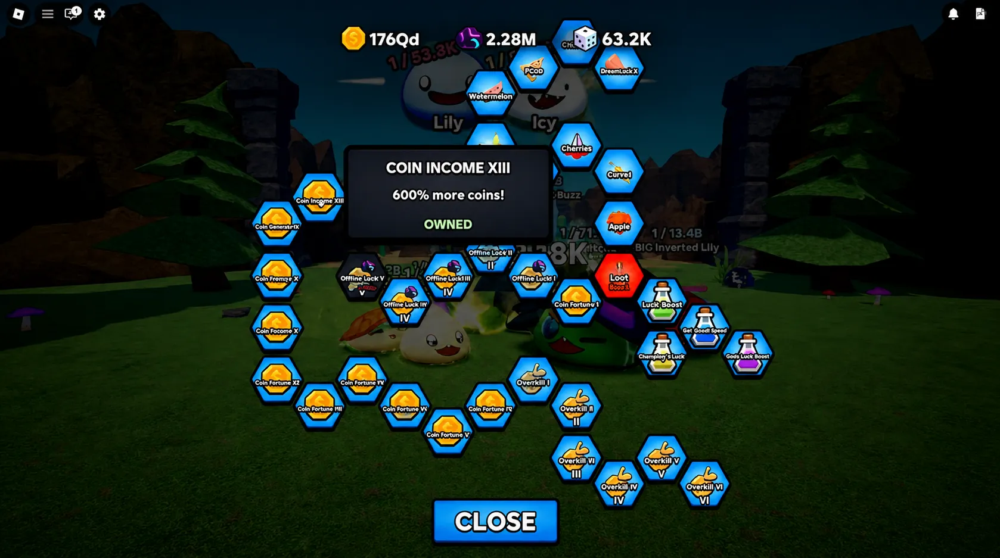
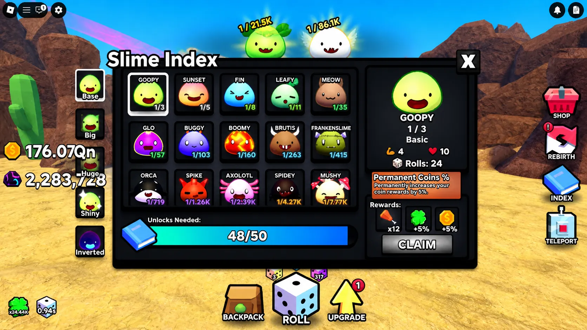
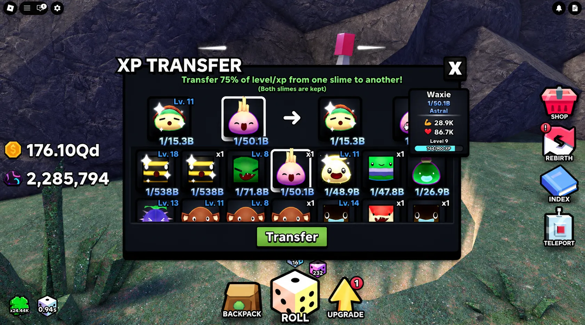
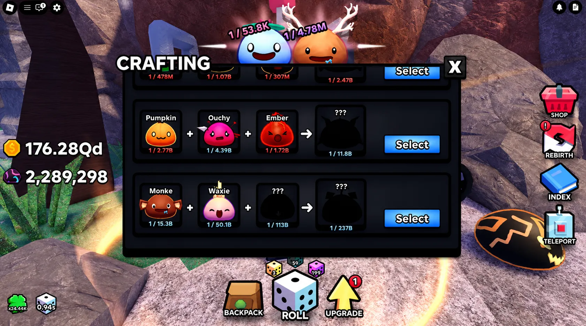

💵 The Best Money Guide
in Slime RNG Roblox (2026)


Money is the lifeblood of progression in Slime RNG, but most players leave massive coin gains on the table by overlooking critical upgrade paths and passive income systems. This comprehensive guide reveals every proven method to maximize your coin generation, from essential loot upgrades that multiply earnings by 600% to offline money strategies that protect your income during disconnections. Whether you're actively grinding or AFK farming, these optimized techniques will accelerate your wealth accumulation without requiring expensive game passes or paid advantages.
📑 Table of Contents
- 1. Coin Percentage Upgrades (25% to 600%)
- 2. Offline Money: Your AFK Safety Net
- 3. Index System: Permanent Coin Boosts
- 4. Auto-Roll Strategy for Maximum Index Progress
- 5. Slime Damage = Faster Kills = More Coins
- 6. Crafting High-Value Slimes for Profit
- 💡 Pro Insight: Currency Boost Potions & Game Passes
- ❓ Frequently Asked Questions
Coin Percentage Upgrades (25% to 600%)
The most fundamental yet often underestimated money-making method in Slime RNG is the coin percentage upgrade system located in the Loot tab. This upgrade path allows you to systematically increase your coin rewards from a base 25% all the way to a massive 600% more coins — a 24x multiplier that separates casual players from wealth accumulators.
Why This Upgrade Takes Priority
Unlike temporary boosts or situational bonuses, coin percentage upgrades provide permanent, compounding returns on every coin-generating activity in the game. Every slime defeated, every roll completed, and every reward claimed benefits from this multiplier. The earlier you invest in this upgrade, the faster your wealth snowballs.
Strategic Investment Approach
While these upgrades become increasingly expensive at higher tiers, the return on investment remains exceptional throughout the game. Don't postpone this upgrade thinking you'll "save coins for something better" — there is no better investment for long-term wealth. Prioritize reaching at least 300-400% coin multiplier before diversifying into other upgrades.
Pro Tip: Check your coin percentage upgrade cost before major spending sprees. If you're within 10-15% of affording the next tier, save up and upgrade first — the increased multiplier will pay for itself quickly.

Figure 1: The Loot tab's coin percentage upgrade is your highest-priority investment for sustainable wealth growth.
Offline Money: Your AFK Safety Net
One of the most underrated features in Slime RNG is the offline money generation system. This upgrade ensures you continue earning coins even when you're not actively playing, logged into another game, or — crucially — if you get unexpectedly disconnected due to internet issues or server problems.
How Offline Money Protects Your Progress
Many players experience frustrating disconnections during extended AFK sessions, losing hours of potential earnings. The offline money upgrade acts as a financial safety net, calculating and awarding coins based on your earning rate even when the game isn't running. This means a dropped connection doesn't mean lost income.
Active vs. Passive Income Strategy
Your upgrade priority should reflect your playstyle:
Heavy AFK players: Max offline money first for consistent passive income
Active players: Balance between offline money and active coin multipliers
Hybrid approach: Upgrade both systems to earn whether online or offline
The Compound Effect
Offline money doesn't just protect you — it compounds your wealth. While you sleep, attend school, or play other games, your coin reserves grow. When you return, you have immediate funds to reinvest in upgrades, creating a positive feedback loop that accelerates progression even during inactive periods.
Common Mistake: Players often neglect offline money upgrades, focusing only on active earning. This leaves massive passive income opportunities untapped and makes disconnections devastating to progress.
Index System: Permanent Coin Boosts
The Index system is arguably the most overlooked money-making mechanic in Slime RNG. Many players treat it as a passive collection tracker, claiming rewards only when they notice the notification. However, strategic Index management provides permanent coin and luck boosts that compound with every claim — often adding 5% or more per reward.
Understanding Index Rewards
Each Index claim grants a permanent increase to your coin rewards, typically around 5% per claim. Unlike temporary potions or situational bonuses, these boosts stack indefinitely and apply to all future coin generation. Players who consistently claim Index rewards can easily accumulate 100%+ permanent coin bonuses just from this system alone.
The Notification System
The Index button displays a number badge (1, 2, 3, etc.) indicating how many rewards are ready to claim. Never ignore this notification — make it a habit to check your Index every few minutes during active play sessions. Each unclaimed reward represents lost permanent income that compounds over time.
Dual Benefits: Coins AND Luck
Beyond coin boosts, Index claims also provide permanent luck increases. This dual benefit means you're simultaneously improving your wealth generation and your chances of rolling rare slimes — both critical for long-term success. The luck boost helps you acquire better slimes faster, which in turn generates more coins, creating a powerful synergy.
Optimization Strategy: Set a mental reminder to check your Index every 5-10 minutes during active sessions. The permanent boosts compound, so claiming immediately maximizes their long-term value.

Figure 2: Index rewards provide permanent coin and luck boosts. Always claim immediately when notifications appear.
Auto-Roll Strategy for Maximum Index Progress
Auto-roll is the engine that drives both Index completion and consistent coin generation. By enabling auto-roll and using the hide feature to move controls to the top of your screen, you create a hands-free farming system that continuously generates slimes, progresses your Index, and accumulates coins without constant manual input.
Setting Up Optimal Auto-Roll
To maximize auto-roll efficiency:
1. Click the Roll button to open rolling interface
2. Enable Auto-Roll toggle
3. Click Hide to move controls to top of screen
4. Position yourself in a high-coin zone
5. Let the system run continuously
Why Constant Rolling Matters
Auto-roll serves multiple wealth-building functions simultaneously:
• Index Completion: More rolls = more unique slimes = more Index claims
• Coin Generation: Each roll generates base coins plus multiplier bonuses
• Better Slimes: Increased volume improves chances of high-damage slimes
• Passive Progress: Works while you're AFK or multitasking
Zone Selection for Auto-Roll
When auto-rolling, position yourself in zones appropriate to your slime damage output. Higher zones like Toxic Wasteland offer better coin rewards but require stronger slimes to defeat enemies quickly. Match your zone to your damage capability to maximize coins per minute rather than getting stuck on high-health enemies.
AFK Optimization: Before logging off or going AFK, ensure auto-roll is enabled, you're in the highest zone your slimes can efficiently clear, and your Index notifications are claimed. This maximizes passive income during downtime.
Slime Damage = Faster Kills = More Coins
Here's a critical insight many players miss: better slimes don't directly increase coin multipliers, but they dramatically accelerate coin generation through faster enemy elimination. A slime dealing triple the damage doesn't give 3x coins per kill — it allows you to complete 3x more kills in the same timeframe, effectively tripling your coin per minute rate.
The Damage-to-Coin Conversion
In high-level zones like Toxic Wasteland or Graveyard, enemy slimes have substantial health pools. A weak slime might take 20-30 seconds to defeat a single enemy, while a high-damage slime accomplishes the same task in 5-7 seconds. Over an hour of farming, this difference translates to hundreds of additional kills and exponentially more coins.
The "Equip Best" Strategy
Develop a disciplined routine of constantly clicking the "Equip Best" button. This feature automatically identifies and equips your highest-damage slimes, ensuring you're always operating at peak efficiency. Every time you roll a new slime, immediately check if it surpasses your current equipment — even marginal damage improvements compound over thousands of kills.
XP Machine Optimization (Graveyard Location)
The XP machine, located in the Graveyard zone, is essential for maximizing slime potential. Transfer XP to newly acquired high-damage slimes immediately rather than letting it accumulate on weaker units. For example, replacing a level 11 slime dealing 10k damage with a freshly upgraded slime dealing 30k damage triples your kill speed — an upgrade that pays for itself within minutes of farming.
Food Items for Leveling
Don't overlook food items in your inventory. Items like watermelons can be fed to slimes to increase their level and damage output. Access the Items tab, select food, and apply it to your highest-priority slimes. This is especially effective for slimes you plan to use long-term.
Common Mistake: Players hoard XP and food on mediocre slimes instead of transferring resources to newly acquired superior units. Always prioritize equipping and upgrading your absolute best damage dealers.

Figure 3: High-damage slimes clear enemies 3-5x faster, dramatically increasing coins per minute in active farming sessions.
Crafting High-Value Slimes for Profit
The crafting system represents one of the most lucrative yet underutilized money-making methods in Slime RNG. By combining specific slime recipes at the Cherry Grove Crafting Station, you can create extremely high-value slimes worth hundreds of billions in coin generation potential — far exceeding what random rolls typically provide.
Understanding Crafting Recipes
Each craftable slime requires specific ingredient slimes in set quantities. For instance, creating a 237 billion-value slime might require three specific lower-tier slimes. The crafting menu initially hides all recipes — you must discover them through gameplay or community resources. Once discovered, these recipes become permanent unlocking paths to guaranteed high-value slimes.
The Recipe Discovery Process
Finding all crafting recipes is a progression milestone in itself. Recipes are scattered throughout the game world, often in hidden locations or as rewards for specific achievements. Many players create dedicated guides mapping recipe locations, or you can explore systematically to discover them organically. The investment in finding recipes pays massive dividends through guaranteed access to billion-tier slimes.
Crafting Priority Framework
- Identify missing ingredients: Check which slimes you need for high-value crafts
- Focus auto-roll on missing pieces: Target specific slimes needed for recipes
- Craft immediately when complete: Don't hoard ingredients — craft and equip
- Reinvest coin gains: Use crafting profits to fund more rolls and upgrades
Crafting vs. Random Rolling
While random rolling relies on luck and can take thousands of attempts to yield rare slimes, crafting provides a guaranteed progression path. Even if individual ingredient slimes have low drop rates (e.g., 1-in-2,500), the autocraft feature allows mass production, making eventual success inevitable through volume rather than pure RNG.
Pro Strategy: Set autocraft for common ingredient slimes before logging off. Wake up to thousands of crafted units, dramatically increasing your chances of completing high-value recipes passively.

Figure 4: The crafting station transforms common slimes into billion-value units through strategic recipe completion.
💡 Honorable Mention: Currency Boost Potions & Game Passes
Currency Boost Potions: Unlock the Currency Boost upgrade in the Loot tab's Potion Area to enable 2x coin potions as enemy drops. While these potions only last 3 minutes, they provide immediate doubling of all coin gains. Strategic players stack these with Ultra Luck and Roll Speed potions for maximum efficiency during active grinding sessions or Admin Abuse events. Don't hoard them — use them in batches during high-intensity farming.
VIP Game Pass Considerations: The VIP game pass offers permanent bonuses including bonus coins (not quite 2x, but meaningful), permanent luck increases, doubled roll speed, and rolling two times per roll. For serious players investing significant time, these passes provide legitimate value through permanent multipliers. However, they're not required for success — many top players achieve wealth through optimized free-to-play strategies. Only consider passes if you're committed to long-term play and want to accelerate progression.